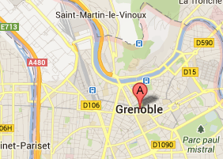

Pour aller à John
173 chemin du Piat Saint Nazaire les Eymes
6020
vers Grenoble Gare
12:30 - 13:01 - 16:12
6070
vers Lumbin
12:54 - 13:21 - 16:45
31
vers Université Versoud
13:02 - 13:41 - 17/05
12:30 - 13:01 - 16:12
12:54 - 13:21 - 16:45
13:02 - 13:41 - 17/05
